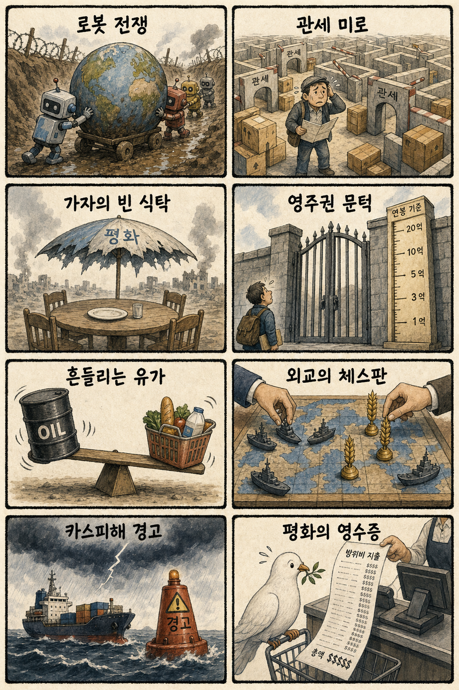
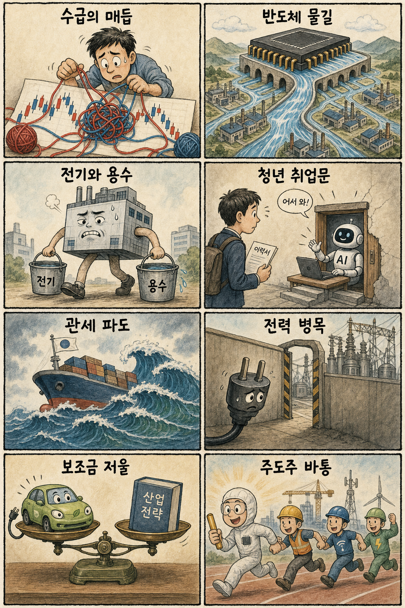

01
링센트럴 25.09% 급등 — 실적 개선과 AI 협력 기대
내용요약 48.31달러로 25.09% 급등했습니다. 2분기 실적 호조와 배당 확대, 기업용 AI 협력 기대가 수익성 개선 평가를 키웠습니다.
예상여파 기업용 AI가 실제 소프트웨어 매출과 이익으로 이어지는지 보는 기준점이 될 수 있습니다.
MORNING_BRIEFING_20260727
작성 시각: 2026-07-27 06:38 KST · 직전 미국장과 2026-07-27 KST 당일 공개 기사 기준
직전 미국 정규장은 다우 +0.46%, S&P 500 +0.05%, 나스닥 -0.64%로 엇갈렸습니다. 경기민감주와 실적 호조 종목은 버텼지만 기술주는 차익실현을 받았습니다. 월요일 한국장은 반도체 수급 회복 여부와 전력·원전·실적형 가치주의 상대강도를 함께 확인해야 합니다.
| 지수 | 종가 | 등락률 | 한국 증시 영향 |
|---|---|---|---|
| 다우존스 | 51,947.25 | 0.46% | 경기민감·가치주가 방어하며 한국 대형 가치주 심리에 완충 |
| S&P 500 | 7,411.98 | 0.05% | 보합권 상승으로 위험선호는 유지되지만 추격 동력은 제한 |
| 나스닥 종합 | 24,975.82 | -0.64% | 기술주 조정이 국내 반도체·성장주의 단기 변동성을 키울 수 있음 |
다우는 올랐지만 나스닥은 0.64% 내려 기술주 피로가 확인됐습니다.
데이터센터 확장이 전력망·배전·기저전원 투자의 필요성을 키웁니다.
미국 내 소송과 추가 관세수단이 수출기업의 비용 계산을 어렵게 합니다.
외국인 선물과 반도체 낙폭 회복을 확인하며 실적형 종목을 선별합니다.
| 종목 | 최근 정규장 등락률 | 종가 비교 | 연결 메모 |
|---|---|---|---|
| 두산에너빌리티 | -1.50% | 73,200원 → 72,100원 | SMR·데이터센터 기저전력 연결 |
| 삼성SDS | -3.90% | 218,000원 → 209,500원 | 기업용 생성형 AI 연결 |
| HD현대일렉트릭 | -6.79% | 869,000원 → 810,000원 | 데이터센터 전력망 연결 |
| 지수 | 종가 | 등락률 | 해석 |
|---|---|---|---|
| 다우존스 | 51,947.25 | 0.46% | 경기민감·가치주가 방어하며 한국 대형 가치주 심리에 완충 |
| S&P 500 | 7,411.98 | 0.05% | 보합권 상승으로 위험선호는 유지되지만 추격 동력은 제한 |
| 나스닥 종합 | 24,975.82 | -0.64% | 기술주 조정이 국내 반도체·성장주의 단기 변동성을 키울 수 있음 |
원전·전력기기, 데이터센터 인프라, 방산 전자, 반도체 기반시설
고평가 AI 클라우드, 광통신 중소형주, 관세 민감 수출주, 레버리지 성장주
내용요약 48.31달러로 25.09% 급등했습니다. 2분기 실적 호조와 배당 확대, 기업용 AI 협력 기대가 수익성 개선 평가를 키웠습니다.
예상여파 기업용 AI가 실제 소프트웨어 매출과 이익으로 이어지는지 보는 기준점이 될 수 있습니다.
내용요약 233.20달러로 17.17% 올랐습니다. 분기 이익과 수익성 지표가 시장 예상을 웃돈 것이 상승 동력으로 거론됐습니다.
예상여파 미국 의료서비스의 방어력이 확인되며 국내 헬스케어도 현금흐름 중심 선별이 강화될 수 있습니다.
내용요약 199.08달러로 11.01% 상승했습니다. 실적 호조와 AI 데이터센터 임대 수요가 투자심리를 끌어올렸습니다.
예상여파 전력·냉각·부동산까지 AI 인프라 수익화가 확장돼 국내 전력기기 공급망에 긍정적입니다.
내용요약 71.59달러로 21.54% 하락했습니다. AI 광통신 매출 개선에도 앞선 급등 뒤 높은 기대를 되돌리는 매물이 나왔습니다.
예상여파 AI 광통신주는 성장률뿐 아니라 밸류에이션 부담에도 민감하다는 경고입니다.
내용요약 187.77달러로 15.02% 내렸습니다. 대형 계약 기대를 선반영한 뒤 AI 인프라 종목 전반의 차익실현이 겹쳤습니다.
예상여파 자본집약적 AI 사업은 투자비와 수익성 검증에 따라 변동성이 커질 수 있습니다.
미국 기술주 조정은 반도체와 성장주에 부담이지만 AI 데이터센터의 전력 병목, 반도체특별법 기반시설 지원, 피지컬 AI 확장은 전력기기·수처리·로봇 공급망에 선택적 모멘텀을 줄 수 있습니다. 관세 관련 소송과 추가 관세수단은 자동차·기계·소재의 실적 가시성을 낮추므로 원/달러 환율과 외국인 현·선물 수급을 함께 봐야 합니다.
| 한국 종목 | 연결 이유 | 단기 확인 포인트 |
|---|---|---|
| LS ELECTRIC | AI 전력 수요와 반도체특별법의 전기 기반시설 확충이 배전·자동화 설비 수요로 연결됩니다. | 전력기기 거래대금, 북미 수주 공시, 기관 순매수 |
| 현대오토에버 | 자동차·로봇·도시를 잇는 피지컬 AI 확장이 차량 소프트웨어와 스마트시티 시스템통합 수요를 키울 수 있습니다. | 그룹 로봇주 동반 흐름, 신규 사업 수주, 장 초반 갭 유지 |
| SK하이닉스 | 장기 AI 반도체 공급망 기대와 HBM 이후 차세대 메모리 혁신 논리가 동시에 부각됩니다. | 외국인 순매수 전환, 최근 저점 방어, 실적 발표 기대 |
대형 반도체의 낙폭 회복과 선물 순매수 전환을 확인합니다.
미국의 추가 관세법과 기업 소송이 수출주에 반영되는지 봅니다.
전기·용수 지원 세부안과 관련 설비주의 수급을 점검합니다.
AI 도입이 IT·전문직 채용과 정책 대응에 미치는 영향을 봅니다.
핵심 요약: AI 경쟁은 모델 성능과 HBM을 넘어 전력망, 차세대 메모리, 피지컬 AI로 확장되고 있습니다. 공급계약과 정책 청사진이 실제 투자·출하·매출로 이어지는 속도를 구분해 볼 시점입니다.
내용요약 AI 데이터센터 확대로 전력 수요가 빠르게 늘면서 공급망과 전력정책을 함께 바꿔야 한다는 진단입니다.
예상여파 전력망 증설·배전기기·냉각과 안정적 기저전원 투자가 AI 산업의 성장 속도를 좌우하는 핵심 변수로 부각될 수 있습니다.
내용요약 중국 스타트업 문샷AI가 새 모델을 공개하며 미국 선두권 모델과의 성능 경쟁을 다시 키웠다는 보도입니다.
예상여파 중국 AI 생태계의 독자화가 빨라지면 모델 가격 경쟁과 반도체 수출통제 논쟁이 동시에 확대될 수 있습니다.
내용요약 메모리 업계가 HBM 성과에 안주하지 않고 차세대 메모리와 패키징 혁신을 이어가야 한다는 업계 진단입니다.
예상여파 HBM 공급 확대 뒤에도 제품 전환 속도와 연구개발 성과가 장기 밸류에이션을 가르는 기준이 될 전망입니다.
내용요약 한미 빅테크 협력에서 한국 반도체의 장기 공급망 역할과 차세대 AI칩 공동개발 가능성이 강조됐습니다.
예상여파 장기 계약이 실제 출하와 설비투자로 이어질 경우 메모리뿐 아니라 소재·장비·패키징 수요까지 확산될 수 있습니다.
내용요약 현대차그룹이 자동차와 로봇을 넘어 도시 운영 단위의 피지컬 AI 전략을 확대하고 있다는 보도입니다.
예상여파 로봇·자율주행·스마트시티를 잇는 실증 투자가 센서, 제어기, 통신과 시스템통합 공급망에 기회를 줄 수 있습니다.
핵심 요약: 로봇 무기가 전쟁 양식을 바꾸는 가운데 가자 인도주의 위기와 유엔 외교 갈등이 이어지고 있습니다. 미국 관세의 적법성 논쟁과 일본의 영주권 요건 강화는 무역과 인력 이동의 문턱이 동시에 높아지는 흐름을 보여줍니다.
내용요약 우크라이나 전쟁에서 무인기와 지상로봇이 정찰·공격·보급의 역할을 넓히며 전쟁 양식을 바꾸고 있다는 분석입니다.
예상여파 방산 수요가 전통 무기에서 센서·통신·자율제어 소프트웨어로 확장돼 관련 공급망 경쟁을 높일 수 있습니다.
내용요약 미국 기업 두 곳이 트럼프 행정부의 대규모 관세가 위법하다며 무효화 소송을 제기했다는 보도입니다.
예상여파 법원 판단과 별개로 관세정책의 예측 가능성이 낮아져 수출기업의 가격·재고·현지생산 전략 부담이 이어질 수 있습니다.
내용요약 가자지구의 장기 전쟁이 주민의 식량·의료·주거 기반을 어떻게 무너뜨렸는지 짚은 현장 중심 보도입니다.
예상여파 인도주의 압박이 커지면 휴전 외교와 지원 통로 논의가 강화되는 한편 중동의 지정학적 위험도 지속될 수 있습니다.
내용요약 이스라엘 총리가 체포영장을 둘러싼 뉴욕시장과의 공방에도 유엔총회 참석 의사를 밝혔다고 전했습니다.
예상여파 방미 과정의 외교·법적 갈등이 유엔 무대에서 가자전쟁 책임과 휴전 논의를 다시 부각할 수 있습니다.
내용요약 일본이 외국인 영주권 심사에서 소득 요건을 강화해 체류 문턱을 높이는 방안을 추진한다는 보도입니다.
예상여파 고령화 속 인력 확보와 사회통합 기준 사이의 긴장이 커져 아시아 인재 유치 경쟁에도 영향을 줄 수 있습니다.

핵심 요약: 국내 증시는 실적보다 수급 불균형이 단기 변동성을 키우는 가운데 반도체의 전기·용수 기반시설과 차세대 메모리 투자가 핵심 축으로 부각됐습니다. 청년 전문직 감소와 미국 관세 재편은 성장의 혜택과 비용이 고르게 퍼지는지 점검하게 합니다.
내용요약 최근 국내 증시 조정을 기업 실적보다 수급 불균형의 영향으로 보고 단기 지지 구간을 제시한 시장 분석입니다.
예상여파 외국인 선물과 대형 반도체 매매가 안정되는지가 반등 강도를 좌우해 장 초반 추격보다 수급 확인이 중요합니다.
내용요약 메모리 업계가 HBM 성과에 안주하지 않고 차세대 메모리와 패키징 혁신을 이어가야 한다는 업계 진단입니다.
예상여파 HBM 공급 확대 뒤에도 제품 전환 속도와 연구개발 성과가 장기 밸류에이션을 가르는 기준이 될 전망입니다.
내용요약 반도체특별법 시행을 앞두고 산업단지의 전기와 용수 공급 기반을 확충하는 지원체계가 본격화됩니다.
예상여파 인허가와 기반시설 집행 속도가 빨라지면 반도체 공장 증설과 전력·수처리 설비 수주 가시성이 높아질 수 있습니다.
내용요약 AI 도입이 빠른 IT·전문직에서 청년 취업자가 17% 줄었다는 통계와 현장 변화가 보도됐습니다.
예상여파 초급 사무·개발 직무의 채용 문턱이 높아져 재교육, 직무전환과 AI 보완형 인재정책 수요가 커질 수 있습니다.
내용요약 트럼프 2기 관세체계 재편이 진행되는 가운데 한국 수출품의 실효 관세율과 산업별 부담을 점검한 분석입니다.
예상여파 자동차·기계·소재 업종은 원가 전가와 현지생산 비중에 따라 실적 차별화가 커질 수 있습니다.
